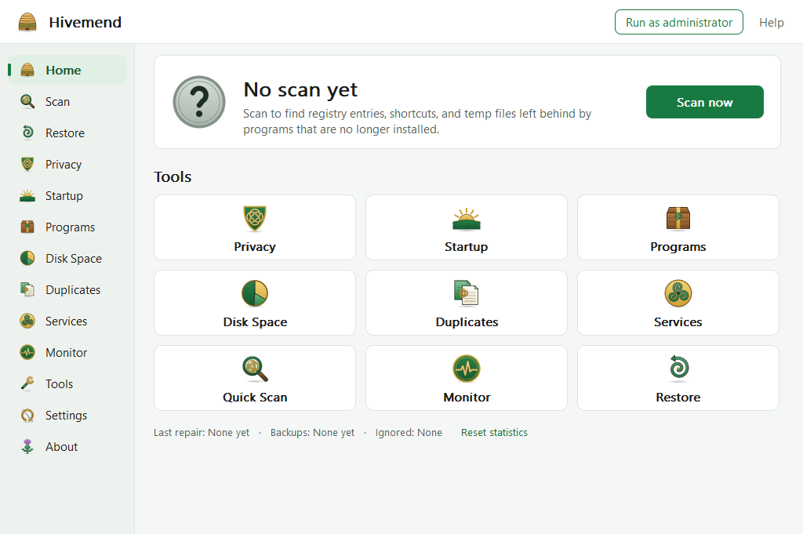
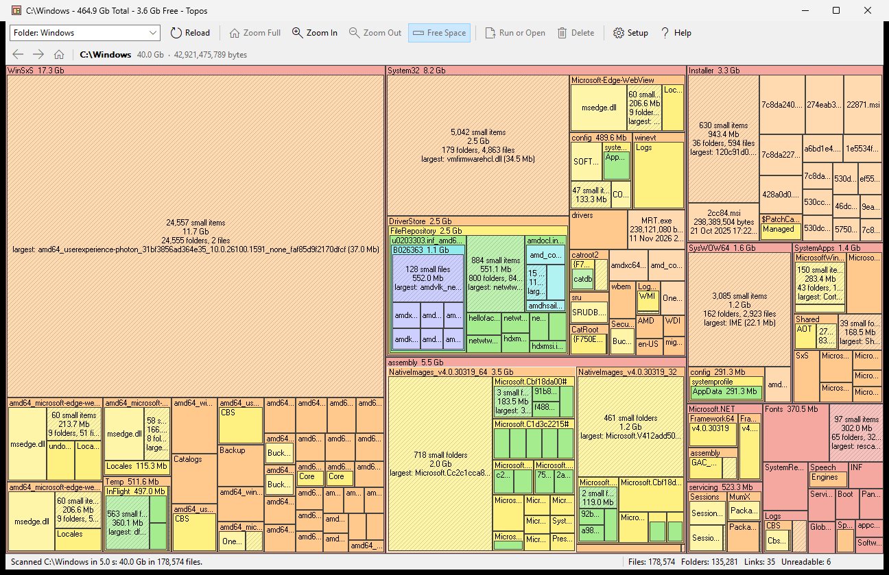

tuigse
TOOK-sha Scottish Gaelic, noun
understanding; discernment.
Tuigse LLC makes software that explains itself, with source, builds and behavior anyone can check.
TOOK-sha Scottish Gaelic, noun
understanding; discernment.
Tuigse LLC makes software that explains itself, with source, builds and behavior anyone can check.
A CB radio simulator in your browser. Pick one of 40 channels, hold to talk, and hear other OpenCB users in range. It runs over the internet, not on the air, so you need no radio.

Free on GitHub under the MIT or Apache-2.0 license. No telemetry, accounts, ads or subscriptions.
Cleans up after uninstalled programs
Programs you remove often leave registry entries, shortcuts and temp files behind. Hivemend finds them, lists each one with the reason it was flagged, and removes only what you choose.
Download installer (3.7 MB) Portable zip (2.2 MB)
Not code-signed yet, so Windows may show a SmartScreen warning. Check the file before you run it.
Or install with Scoop:
scoop bucket add hivemend https://github.com/Tuigse-oss/scoop-hivemend
scoop install hivemend
Disk-space treemap
Shows every folder and file on a drive as a tile sized by the space it takes, nested inside its folder. Zoom in like a map, then open or delete straight from it.
No release yet. Build it from source with a current Rust toolchain.

IRC client
A native desktop client that keeps your servers, channels and private chats in one window, with a nick list and a docked panel for highlights.
Download portable zip (9.5 MB)
Not code-signed yet, so Windows may show a SmartScreen warning. Check the file before you run it.
Each release is built by public CI from a tagged commit, and published with a SHA256SUMS.txt file and a GitHub build attestation. The apps are not code-signed yet, so Windows SmartScreen may warn you. In PowerShell, in the folder you downloaded to, the first command prints a hash to compare with SHA256SUMS.txt on the release page, and the second, which needs the GitHub CLI, confirms the repository's workflow built the file.
Get-FileHash .\Hivemend-v0.1.6-x86_64-setup.exe
gh attestation verify Hivemend-v0.1.6-x86_64-setup.exe --repo Tuigse-oss/HiveMendGet-FileHash .\OpenIRC-v0.1.0-x86_64-windows.zip
gh attestation verify OpenIRC-v0.1.0-x86_64-windows.zip --repo Tuigse-oss/OpenIRCThese checks show where and how a file was built. They don't make a program safe by themselves, which is why the source is open for anyone to read.